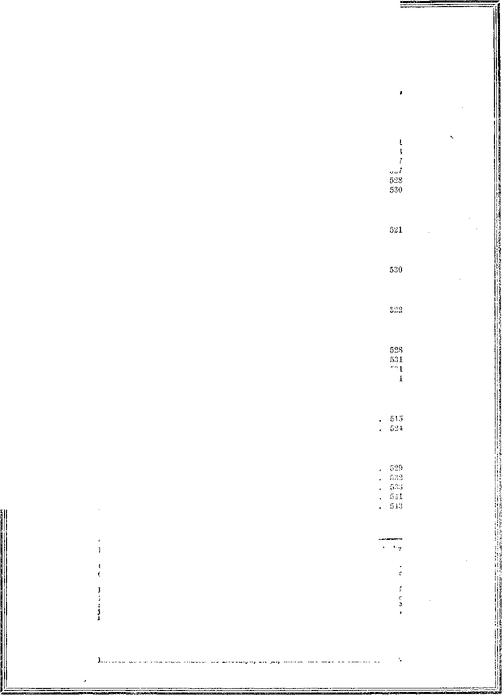

limmnnmmsmmEEEmmiih. imimimmm in this issue
. SUPREME POWER second of a series of radio lec-■ tures on good government, by
Judge Rutherford
EVERY OTHER WEDNESDAY 5c a copy - $1.00 a year - Canada & Foreign $1.50
Volume X - No. 252 . a May 15, 192 9
Contents
Educational
527
and Mining
Invention
and
Home
Health
and
Five Cents a Copy—$1.00 A Year
Entered as second-class matter at Brooklyn, N. Y., under the Act of March
521
523
British .... Canadian . . . Australasian . South African
Science
Bugs, and More About Bugs .
O Hail Happy Bay ..... A Sad Compliment to Law . . Walnut Leaf Tea fob Anemia . Another Domestic Baking Powder
Manufactures
Valley Camp Coal Company . . .
Travel and Miscellany Civilization in Northern and Southern Nigeria Faces .................
Foreign Offices
s ■. 34 Craven Terrace, London, W. 2, England . 40 Irwin Avenue, Toronto 5, Ontario, Canada , . . 495 Collins Street, Melbourne, Australia .... 6 Lelie Street, Cape Town, South Africa
Published every other Wednesday at 117 Adams Street, Brooklyn, N. Y., U. WOODWORTH, KNORR & MARTIN
Copartners and Proprietors Address: 111 Adams Street, Brooklyn, S', i'
CLAYTON J. WOODWORTH.. Editor ROBERT J. MARTIN.. Buslnest
NATHAN II. KNORR.. Secretary and Treasurer
522
Social and America’s Frantic Rush for Art Harkness Gift Poorly Appreciated Death of Walter Liddle . . . ‘ No Testimonials Published . . Edward Bellamy and the Radio West Australia Needs the Kingdom
Political—Domestic and Foreign The Public Needs Reforming .........
Heligion and Philosophy
Jonah and the Great Fish ........
Why Abe the Churches Unpopular? .... Supreme Power,
Bible Questions and Answers .......
The Children’s Own Radio Story ......
531
531
S. A., by
V. 8. A.
Make Remittances to THE GOLDEN AGE
Notice to Subscribers: We do not, as a rule, send an acknowledgment of a renewal or a new subscription. A renewal blank (carrying notice of expiration) is sent with the journal one month before the subscription expires. Change of address, when requested, may be expected to appear on address label within one month.
i, 1879.
Volume X Brooklyn, N. Y., Wednesday, May 15, 1929 Number 252
By Claude Brown (West Africa)
THE colony and protectorate of Nigeria is the largest of the British West African possessions, its approximate area being 346,000 square miles, or nearly three times the area of the United Kingdom.
Its population is estimated to be 18,707,921. (including the acquired territory of the German Cameroons), of which about ninety-three percent are illiterates. It is bounded on the west and north by French territory, on the northeast by Lake Chad, on the east by Cameroon, and on the south by the Gulf of Guinea.
Nigeria is divided into four great zones. The first zone is a belt of sw’amps and mangrove forest from ten to fifty miles wide which follows the greater part of the coast line. It includes the delta of the great Niger River, and its various confluent rivers and creeks.
The main physical feature of this vast region is, of course, the Niger River, from which it is named. The river Niger rises in the mountains to the northeast of Sierra Leone, and flows northward to Timbuctoo; the latter is the most important commercial city in the northern portion of the French territory, and is sustained by the vast resources of the Niger River trade with Europe.
The Niger is connected from the northwest with the river Senegal, with outlet at St. Louis, and by railroad from Dakar, forming a junction at Bafulabe and Bamaku. Almost two-thirds of the Niger River flow’s in French territory.
From Timbuctoo the Niger flows to a point 'due north of the Gold Coast, then turns at Bamba in a southeasterly direction, and enters Nigeria from the west, running in a southeasterly direction until it receives the waters of the Benue (its principal tributary) at Lokoja, a point 340 miles from the sea. From here it flows due south in one large stream to a point west of Owerri, about 190 miles from the coast, where it splits into a vast number of interlacing channels and streams, and finally empties its v-aters into the Gulf of Guinea through its numerous mouths.
The Niger Company
In these various creeks and channels a great trade is carried on by the combine knovui as the “Niger Company”, which holds the monopoly of the Niger trade by royal charter since 1886, before which it wns knovm as the “National African Company”.
The charter gave the company the rights to explore the interior of the Niger region and to trade with the natives in European goods, such as cotton goods, salt, gunpowrder, rum, and various other commodities. They in turn export from the country, ivory, palm-oil, palm-kanals, rubber, hides, shea-nut,, and various other tropical products.
The opening of the Niger trade revealed to Europeans the mineral 'wealth of the hinterland of Nigeria. Seeing that the metallic riches of the heights of the Bauchi Plateau were unknowm to the natives, who use gold chiefly fox’ adornment, the traders began to try to control the chiefs with large presents of European goods, so as to keep them blind to the objective of the company until forts and stations could be built.
By 1897 the company had organized a large force to resist the encroachments of the French, and to subjugate the more or less stubborn chiefs who, for a time, refused to bow to the English traders’ request for the key of the country. This, hovmver, the traders subsequently acquired through their greed for gold and their desire to control the mineral wealth of the vrnrld. See Morell’s Black Man’s Burden.
The Fastness of the Bauchi Plateau
The second zone is a belt of dense tropical timber forest from fifty to a hundred miles
wide, intersected by rivers, streams and creeks, which is very rich in oil-palm trees, and constitutes one of the chief sources of the wealth of Nigeria. In this belt there is hardly any open ground, except around the small villages in the forest and in the vegetable farms of the natives.
It is very difficult to determine where . one zone ends and where the other commences, as the change is always gradual. A line running through Abeokuta, Ebadan, Ondo, and Onitsha could roughly serve as a boundary.
The third zone is a belt of more open country which gradually becomes clearer, park-like as it were, being followed by open expanses covered with high grass. This zone is hilly, especially north of Ondo and on the Cameroon frontier.
The fourth zone is a vast plateau with occasional hills of granite and sandstone. The elevation is about two thousand feet above sea-level, except in some parts of the Bauchi and south of Yola, where there are considerable heights.
In these heights the fiercest struggles took place between the native chiefs and the forces of the Niger Company, in the latter’s effort to subjugate the native rulers and to gain control of these rich provinces, invaluable for their mineral wealth and other natural resources. The French were also harassing the people in their endeavors to subjugate these provinces, to usurp control from the native chiefs, and to drive out the British traders.
Then the Niger Company,, seeing its way to control the situation, turned over its rights to the Crown in January, 1900. Shortly afterward this vast territory became known as the protectorate of Nigeria, with Col. Lugard as its first high commissioner.
Spreading Christianity (?) in Africa
From this time forward Col. (afterwards Sir) Frederick Lugard, began to subjugate the mighty kingdoms of the northern provinces of Nigeria by a force of colonial and West African warriors; and with the aid of modern equipments of war they were able to capture some of the strongest fortresses of the kings of the north, whose crude weapons of warfare, mighty only amongst themselves, were no match for the long-range guns of civilization working havoc upon their cities at great distances.
One by one the powerful kingdoms of the northern territories were crushed at the feet of Sir Frederick Lugard, in spite of all efforts an'd confederacies with other northern tribes. British force bade them, “Be still. We are here to stay. We are ‘Zacky’ (Lion); therefore your only wise course is to bow and remain prostrate.”
Between 1900 and 1906 the most powerful kingdoms of northern Nigeria were subjugated and made subjects of the British crown, in spite of many uprisings and desperate endeavors to maintain their liberties as independent kingdoms. They were already between the vises of “civilization” and its underlying principles, selfishness, duplicity and hypocrisy, veneered with education, refinement and cultivated diplomacy, in the name of “Christianity”, which is only in form and not in fact. .
Because of this the name “Christianity” has become an abhorrence to the Mohammedans and all the non-Christian races of the northern provinces. From time to time one hears these heathen people appealing to the so-called Christians, not for favor, but for justice and equity.
The emirates of Kontagora, Yola, Bauchi, Bornu, Kano and Sokoto are the most powerful kingdoms iii Hausaland; but these have been reduced to common subjects, in order that the objectives of the conquerors may be obtained ; for only by complete subjugation of the country will the government be able to control the invaluable mineral wealth of the northern districts.
The natives were brought under such complete control of the Europeans and officers of government that up to very recently it was the practice in Northern Nigeria that when a native met a white man he must at once take off his hat and prostrate himself on the ground as he passed along, as an act of homage. But this act was discountenanced by the administration of Sir Hugh Clifford (successor to Sir Frederick Lugard). It was always resented by the intelligent natives of Hausaland.
Incivility of Europeans in Northern Nigeria
After the amalgamation of the Northern and Southern provinces of Nigeria in 1914, Europeans still enforced an injunction upon all Negroes in the northern territories to take off their hats in the presence of Europeans and officials; or in case a Negro should pass by, his business was to take off his hat until he passed out of sight.
Where this was omitted, the officer would come and lick off the hat from the individuals head with his cane, or where there was an illiterate police near by, he would be commanded to go at once and lick that man’s hat off his head. These police recognized the white man as “Zacky” and at once carried out the order as instructed.
In many cases the poor victim of such indignities was doing Iris work, without any notice that a European officer was present, but he was suddenly made to know this when he felt his hat licked off his head by some one. An attempt to retaliate brought upon him the severest discipline.
When the West Indians were engaged to work for the Nigerian Railroad, between 1913 and 1918, many of them were sent to the Northern territory to perform their duties. This custom of Europeans’ licking off the hats of Negroes was repeatedly practised on the West Indian employes of the government, while in course of performing their duty.
This incivility met with the greatest resentment from the West Indian staff; and drastic measures were threatened, should it be continued. The matter was taken up with the governor, Sir Hugh Clifford, who at once took steps in laying out measures against any European officer who would practise such indignity and disrespect to any subordinate staff of the government. Thus tyranny and despotism in Northern Nigeria began to give way for the “New Era”, the better day, when justice, equity and love shall be the moving factor of earth’s government.
The Wealth of the Bauchi Plateau
It is evident that the conquest and subjugation of Northern Nigeria was not so much out of love for the people, or an ardent desire to extirpate the slave trade and to establish justice, equity and legitimate commerce with the people.
The following statement by A. E. Burns, of the chief secretary’s office, Nigeria, is of interest in this connection. He says:
The mineral wealth of Northern Nigeria is now an acceptable fact; and the tin mining industry has become of great importance. There is evidence that the existence of tin on the Bauchi Plateau had been known to the natives long before the advent of the British, and that they had smelted it on a small scale for many years. As long ago as 1885 this was known to Europeans; but owing to the unsettled condition of the country no attempt at prospecting could be made.
I quote further’ from the same writer:
Mining was started (in the Bauchi district) by the Niger Company, in 1906; and in 1921 there were sixty-two mining companies operating in Northern Nigeria, mostly on the Bauchi Plateau. The companies occupy over 400,000 acres.
The average number of employes in 1921 was 174 Europeans and 14,795 natives; and at that time labor was scarce. The average wage paid to the native worker was 6/- (six shillings) a week, less than $1.50 a week (in American money). What, then, would it be now, when labor is plentiful?
Is this not traffic in human blood and labor? -What nourishment can six shillings a week provide for these poor victims and their families? Is this not civilized slavery? How can we escape the law of retribution for such injustices and inequalities?
Prophecy is history written in advance. The Apostle James, looking forward to the end of the age and the condition of affairs among men, says:
“Come now’, you rich, weep and lament over those miseries of yours which are approaching. Your rich stores have decayed, and your garments have been moth-eaten. Your gold and silver have become rusted; and the rust of them w’ill be for a testimony against you, and consume your bodies like fire. You have laid up treasures for the last days. Behold! the hire which you fraudulently withheld from those laborers who harvested your fields, cries out; and the loud cries of the reapers have entered the ears of the Lord of Armies.”
The market for tin in England, from 1915 to 1922, rose from £97. 0. 0. to £350. 0. 0. a ton. The hire of those laborers, who have produced this mineral from the earth, has been kept back by fraud, and these riches have been heaped up preparatory for the "day of vengeance of God Almighty’, when a just recompense will be meted out to the rich monopolies of our day.
“They shall also gird themselves with sackcloth, and horror shall cover them; and shame shall be upon all faces, and baldness upon all their heads. They shall cast their silver in the streets ... : their silver and their gold shall not be able to deliver them in the day of the wrath of the Lord.”
Slave Trade in Nigeria
The history of Nigeria as a whole, prior to the advent of the British,, has not yet been written. There are fragments of accounts from the various tribes which form a connecting link to prove that there existed several powerful kingdoms in the north. Owing to Mohammedan influence these had attained a very remarkable 'degree of civilization, while in the south very few had attained an equal standard.
In the early part of the nineteenth century Lagos had become a great European slave market. This excited the minds of Wilberforce and other well-disposed English men and women, of whom few, if any, are alive today. These, as individuals, labored constantly against great odds in an endeavor to extirpate the slave trade; and finally success crowmed their efforts.
In 1838 the slave trade was almost completely abolished on the west coast of Africa, in the West Indies and in South America; and subsequently in North America, through the Civil War in 1861 to 1865. Thanks to the noble souls who labored earnestly for the justice of this cause and for the emancipation of Negro slaves throughout the world!
In the close of the year 1851 action was taken by the British government against King Koso-ko of Lagos, who seems to have been encouraged in the slave traffic by the big presents he received from European traders in rum, tobacco, gunpowder and Manchester cotton goods, for which he exchanged the native sons of Africa and encouraged the same among his subchiefs.
Suppression of Slave Traffic
The following year Kosoko was deposed by the help of the British, and King Akitoye was enthroned. Akitoye saw the difficulty of suppressing the slave trade (which was still carried on by some of his subchiefs and other native rulers).
lie and other loyal chiefs signed a treaty agreeing to abolish the abominable export of slaves from Lagos to the European traders, and to encourage peaceful and legitimate trade.
They agreed also to accept missionaries into the land, the advance-guard of government. The latter came and laid 'down the foundation for exploitation, by blinding the people with religious errors, superstitions, and doctrines of demons.
It is clearly manifest today that true Christianity was never introduced into West Africa; and this is fully attested by the character, life, and manners of the people, especially of those who are supposed to be the very elite of Christianity in the various towns along the coast,
In spite of the endeavors of these heathen chiefs to abolish this heinous traffic in human lives and blood, the European traders still forced this horrible trade upon the people for many years thereafter, seducing them with huge bribes and with valuable presents of cotton, gunpowder and rum. '
Aldtoye’s son, Dosumu, who succeeded his father, was unable to prevent the traffic in slaves, and in 1861 he ceded Lagos and its dependent territories to the British government. These Were after-wards formed into what is known as the colony of Lagos. '
In 1866 the colony became a portion of the West African Settlements under a governor-in-chief resident at Sierra Leone, and in 1874 it was united with the Gold Coast colony. In 1886 Lagos and its hinterland, which was gradually acquired, was separated from the Gold Coast and became the colony and protectorate of Lagos. _ ' _ '
The putting down of one evil introduced another. The coming in of the whites became the cause of many bloody battles among the natives, having for their objective the control and subjugation of Northern Nigeria for the British government. One tribe was used to fight another, so that all together might lose all to the British.
Stubborn Resistance by the Jekries
The Oil Rivers Protectorate, lying eastward of the Lagos territories, was officially recognized after the Berlin Conference of 1885. The Oil Rivers Protectorate was governed first by consuls; in 1891 a commissioner and consulgeneral was appointed, resident at Calabar, with deputy commissioners and vice-consuls on the various rivers.
By 1893 the hinterland was annexed; and the then increased territory was renamed the “Niger Coast Protectorate”, and placed under an imperial commissioner and consul-general.
This caused great resentment on the part of the natives, and severe fighting began with the Jekries, who desperately attempted to maintain control of the territory between the south of Lagos and the Oil rivers section.
In 1894 the Jekries chief, Nana, stopped all trade on the louver parts of the Benin River. He was finally defeated and deported. From this time forward the people, inflamed over the loss of their territory and the deportation of their chief, committed many treacherous acts on peaceful traders.
In 1897 a peaceful mission to Benin was attacked, and all but two were massacred. For this they paid dearly in the consequences which followed. A powerful expedition captured the city, the king surrendered, and shortly afterwards he was deported. The Niger Coast then became the protectorate of Southern Nigeria, and was placed under a high commissioner responsible to the colonial office.
In 1902 a powerful expedition subjugated and disarmed the Aro tribe, which held paramount power over a large territory between the Niger coast and the Cross river. In 1906 Lagos and Southern Nigeria were amalgamated and designated the colony and protectorate of Southern Nigeria.
In 1914 Lagos and the protectorate of Southern Nigeria were amalgamated with the protectorate of Northern Nigeria, and the whole country became the colony and protectorate of Nigeria, under the governor and conqueror Sir Frederick Lugard, who became the first governor of Nigeria, with the personal title of governor-general. He certainly earned his title by conquest, and by an administration of force and injustice that will never be forgotten in Nigeria.
Religion and Language of Nigeria
The African population of Nigeria is divided into a large number of tribes speaking different languages and dialect and possessing different characteristics. The northern part of the country is inhabited chiefly by Negroids and Berber peoples, while the southern fastnesses of the Bauchi Plateau are inhabited by Negro races.
The most important of these are the Hausa-speaking tribes, known as the Hausas, the Yoruba, the Eboes, and the Kanuri, occupying respectively the northwest, southwest, southeast and northeast of Nigeria. The Fulani, one of the most important tribes politically, are scattered throughout the northern provinces. See map of Nigeria, which shows the approximate position of all the important tribes.
The Hansa are of the Negroid type and are mostly Mohammedans. There are several tribes which claim to be the descendants of the original Hausas; but it is impossible today to say to which of them this honor really belongs.
The Hausa language is adopted by many tribes as the mother tongue, and it has become the lingua Franca of the Western Sudan. Moreover, the Hausa language is the only language of tropical Africa that has been reduced to writing by the natives themselves and uses modified Arabic characters.
Not all the educated Hausas are competent in reading the classical Arabic of the East. Nevertheless, many of the superior intelligent Hausas understand and read Arabic in any form, through their intimate relationship with the Arabs of Asia and Northern Africa.
Mohammedanism seems to have been introduced among the Hausas at a very early date, somewhere about the eleventh or twelfth century. For many centuries they possessed a form of civilization and a well-regulated system of government, based upon the Mohammedan rituals, long before the advent of Europeans to the African shores. This has been admitted by Europeans to have exceeded their form of Christianity by far, in morals, integrity and sincerity.
The Fulani
The origin of the Fulani is very obscure, but it is believed that they first came from Upper Egypt, and gradually migrated westward to the Atlantic coast. It is well known that they entered Hausaland somewhere about the twelfth century. -
It is said that a great number of them flocked to the towns, where their superior intelligence soon placed them in prominent positions. They intermarried freely with the native Hausas, and adopted the Mohammedan religion.
But many of them remained a pastoral people, migrating with their flocks in search for pastures, keeping themselves pure, and in most cases retaining their pagan beliefs. These pastoral Fulani are altogether different from the aristocratic Fulani, who formed the ruling’ classes throughout Hausaland.
Early in the nineteenth century Othman Dan Fodio, a Fulani, raised a revolt against the rulers of the Hausa states and overthrew them. He became sultan of Sokoto, one of the central cities of the northwest of Northern Nigeria; and certain of his followers were established rulers of the other states.
A well-regulated system of laws and taxation was retained by the Fulani rulers, who governed the country for a long time with moderation and integrity; but, gradually, as they came in contact with European civilization and despotism, they began to fall away from this high standard.
Educated and Semi-Educated
Almost the entire bulk of the population of Northern Nigeria, literates and illiterates, adopted the Mohammedan religion; the remainder are chiefly pagans and fetish-worshipers. In the colony of Southern Nigeria, more than .three-quarters of the inhabitants are paganfetish-worshipers. So-called Christianity is more widespread among the educated and semieducated of the coast towns.
The educated are the professional class, who always keep aloof as a caste by themselves, separated from the more oi’ less semi-educated. This caste, as well as the semi-educated, retain and support the custom of polygamy as a tradition and national custom, irrespective of their profession of Christianity and church membership.
The semi-educated are those whose intellects are hardly beyond the ability to buy and sell. From among these are appointed those who have styled themselves ministers of religion, teachers, pastors, etc., positions in which they were placed by missionaries.
These merchants of “European religion” have blocked the way to all further intellectual progress, religious or social; dispensers of false doctrines, they have commercialized Christianity; cajoling the poor natives to pay all kinds of dues, in money of many kinds, in order to secure the reward of being sent to heaven when they die, through the church’s funeral; for without the remains’ being brought to the church at death, one is said to have died a deplorable death and consequently can not escape “hellfire”.
Thus these parasites keep the poor people working all their lives, and going destitute, in an endeavor to pay God so as to escape at death this horrible serpent with all the stinging hissing of an imaginary “Hell”.
Shame for so-called Christianity! Can the heathen be converted with such abominable lies, repugnant to reason, contrary to the Scriptures, and an abhorrence to the name and character of our Almighty Creator? It is time for this foul stain to be removed from the name and character of Jehovah in heathen lands.
The class above mentioned are the ones, chiefly, that are opposed to the truth, and to the religious advancement of the people, which in a practical sense means liberty to object to the teachings of these parasites. The time is not far distant- when this will be a fact in West Africa and the captives will be set at liberty.
Superstition Barrier Being Broken
The Yorubas occupy the hinterland of Southern Nigeria and are probably the most advanced tribe of the colony and protectorate of Southern Nigeria. These and other tribes' of the coast- line have been blessed with the witness of the “good news of the Kingdom”, and this message may work radical changes in due time. Already the searchlight of general intelligence begins to dispel the mist of error, darkness and superstition which for many years has blocked the road to all progress, economic, social and religious.
The constant hammering against these barriers by sober-minded and intellectual men of the African race is gradually clearing away the refuse; and the Devil’s organization is giving way on every side, marking time for the “New Era” and the ushering in of the better day, when Messiah’s kingdom will establish equity, justice and peace amongst men, and when wicked profiteering, racial prejudice, and religious frauds shall be for ever stamped out. Thus will be ushered in the long-promised “poor man’s chance”, which will be in fulfilment of the words of the Apostle John:
“And I saw a new heaven and a new earth: for the first heaven and the first earth were passed away; and there was no more sea [no more restless, discontented masses of mankind, anarchistic and otherwise, here symbolized by the turbulent waves of the sea]. And God shall wipe away all tears from their eyes; and there shall be no more death, neither sorrow, nor crying, neither shall there be any more pain: for the former things are passed away. And he that sat upon the throne said, Behold, I make all things new A
IT MAKES the bloo'd of any decent man run cold to read a story like the following, which is taken from the Pittsburgh Post-Gazette of March 26, 1929. It needs no comment. It speaks for itself. The Post-Gazette is one of the most reliable papers in the East.
Dead men still pay their rent to the Valley Camp Coal Company. They pay for the electric bills, doctor bills and for lamps they used in Kinloch mine to dig coal last Thursday, when disaster came.
It was pay day at the ill-fated Kinloch mine yesterday, The widows and orphans of the 46 who went down to mine coal mid came back in burlap shrouds, went to the company offices to get what was due them.
They got what was left after the payroll clerks had deducted what was owed the company. 'The rent of the company houses for the first half of March was taken out by the company. So were the electric bills.
Mrs. Hugh Degman, mother of .David Jamison Dehama, one of the victims, went for her son’s pay. He had $15 due him. And Mrs. Degman needed $20 to pay for the digging of his grave in a New Kensington cemetery. But she did not get the $15.
David Dehama owed $8.50 for house rent. He owed a 75-cent doctor’s bill. The usage on the blackened lamp that came up with his body, was worth 75 cents to the company. So Mrs. Degman went out with only $5. She had to get money elsewhere to dig the grave. She pleaded, so she stated, with Superintendent Oliver L. Taylor to help her get more money. He tried and sent her to some other official. But Mrs. Degman got only $5 from the company.
Her case was just one of many. Her husband, veteran of three serious mine disasters in Pennsylvania, went to the company store to get food to feed his ... family and the visitors who came for the funeral. It was made so difficult for him at the store, he said, that he walked out without the food and went to the Bed Cross.
Although she is not a widow, Mrs. Blanche Hancock is in a dilemma trying to feed her helpless husband and their six children without money. William Hancock had worked only three days in three months when the explosion caught him on the tipple at Kinloch and cooked the flesh about his head.
But one son, Gardner, had $8.25 due him at the company office. Mrs. Hancock went for it. She got just $2.25. The rest went back to the company for a half-month rental of their home.
WHAT doth it profit either the individual or the nation with incessant care to build up these colossal fortunes of ours in America; to tug, sweat, compete, to gut our natural resources ; to speed up labor; to make the cost of living high; to breed bewilderment, rage, discontent— if by so doing the only purpose achieved is more wealth, more restlessness, more expensive houses, furs, jewels for milady, and by the same token more doctor’s bills, more automobiles, more picture galleries?
What do we want? What is our goal? Simply crass, material, piled-up gold? To loot with all speed our stupenduous natural resources, and then with that loot to hotfoot it to Europe, where life, art, beauty, proceed at a slower and surer pace; to hire experts to buy up treasures, carved doors, frescoes, sculptures, from the tombs of dead kings; and fetch it all back here to install; these man-made masterpieces for which we as a nation are paying a terrible price.
For not only is this frenzied pace costing us our big natural resources of wealth, of beauty, but it is costing us also our national integrity, our peace, our content. It is burning us up alive. High and low have caught the looting infection.
[We add a few words, not by way of chilling the oratory of friend Porter, but to calm the situation somewhat. A large joke has just been perpetrated on the art collectors of the world, its ramifications extending to the ends of the earth, and running into millions of dollars.
It seems that an Italian sculptor, archaeologist, architect and chemist, a really capable man, Alceo Dossena, of Rome, has reduced the making of copies of old art objects to a science.
The effect of erosion was obtained by the sand blast, the effect of cracking of marble was obtained by the use of fire, and stains which went below the surface were obtained by means of some kind of chemical. Old wood was artistically nailed to new.
The result is that Dossena’s copies of rare art works have gone into some of the finest art collections of Europe and America. American collectors and museums alone paid over $1,000,-. 000 for their share of the fakes which came from Dossena’s studio. So the Hooting’ of Europe’s art treasures has not been quite as genuine as the first glance makes it seem.—Ed.]
J HAVE read with much interest in The Golden
Age, accounts of various insects, honey-bees, flies, mosquitoes, spiders, ants; and even the doodle-bug of Texas received honorable mention. Some of these creatures were recognized as friends of the human family because their life work is in ministering to man’s needs, either as the honey-bee, in providing him with food, or as the spider and the doodle-bug, in adding to his comfort by waging a destructive warfare upon another class of insects designated as pests. Each species, active in its sphere, evidently accomplishes a purpose for which it was designed.
But I wish here to mention another very important factor in the relationship of some of these little pests with the human family; and that is their ability to carry germs of disease from the sick to the well, and thereby inoculate human beings with contagious and epidemic diseases.
Dr. Joseph McFarland, in his new book entitled Fighting Foes Too Small to See, says: “To get typhus fever one must be bitten by infected Hee; to get yellow fever, by infected mosquitoes; to get African lethargy, by infected tsetse flies,” etc.
The bubonic plague, called “black death”, is usually conveyed to man by the bite of fleas. This is a disease of rodents, especially of rats, from which fleas become infected, and by their bite communicate it to man. Plague is an extremely fatal affection; and even at the present time, in places where sanitary measures can not be enforced, the disease spreads, and people die in great numbers. Thus in India, in 1901, there were 362,000 cases, with 278,000 deaths. In the first six months of the epidemic of 1907 the deaths in India reached, a total of 1,062,908. But wfliere sanitary precautions are possible, as in New York, San Francisco, and other American ports to which the infection was brought, the disease did not spread.
The danger is not from the insect, but from what it carries in it; not from a well insect, but from an ill one. The insects can no more create the micro-organisms of disease than we can. They are the unfortunate ones that have themselves become infected with germs of disease taken in the blood of animals or human beings they have bitten.
The mosquito is probably the greatest criminal pest in this respect; its chief business seems to be to inoculate human beings with the germs of malaria, dengue and yellow fevers. The cause of yellow fever is a tiny spiral microorganism, found in the blood of cases of the disease. It is found to be infective for guineapigs, and can be transmitted to them by the bite of mosquitoes that have bitten human beings suffering from the disease.
The idea that yellow fever is caused by the bite of mosquitoes has long been held, but the final proof of it came in 1900 when a commission of medical officers of the United States army, consisting of Drs. Reed, Carrol, Lazear and Agramonte, was sent to Cuba for the purpose of investigating the disease. The37‘ were successful in establishing the fact that it is transmitted from man to man through the bite of certain mosquitoes; not only did they show this, but they showed that there was no other way of communicating the disease. Through their efforts it became established that only one species of mosquito, Stegomyia calopus, can carry the infection.
The mosquito is peculiarly a town and house post. It breeds in cisterns, rain-barrels, gutters, and pools of fresh water. Stegomyia mosquitoes are found only in hot countries, and are quickly killed by frost. In summer-time these mosquitoes may be carried by ships or by trains to points out of their normal geographical distribution, where they may live so long as conditions are favorable.
If while thus present at a northern port, another ship should bring in a case of yellow fever, there would be no essential difference between this city and the native home of both the yellow fever and the mosquitoes, and the disease could and probably would spread. It was, no doubt, just such a circumstance that made possible the great epidemic of yellow fever in Philadelphia, in 1793, in which about one-tenth of the population of the city died of the disease.
It is important to every city to which yellow fever may come, to see that there are no mosquitoes to transmit it when it does come. That this is possible it is only necessary to note what has been done at Panama, in Cuba, and in New Orleans. In all these places yellow fever was in the past common and fatal, but through energetic mosquito extermination each has been made reasonably safe both for its own inhabitants and for visitors. Mosquitoes and all other biting insects should be carefully excluded from every home. The same precaution, that will exclude the house-fly will exclude the mosquito.
Speaking of the common house-fly, Dr. McFarland says: “It is difficult to understand howq in times when the newspapers have had so much to say about the filthy but festive house-fly, any one can any longer tolerate its presence in his house. It is true that it is not known to be a regular vector of any disease, but its filthy habits make it the possible vector of many. The chief danger from the fly is in its disgusting habit of first frequenting the privy, and then at the ringing of the dinner hell, coming to the table without taking the trouble to wipe its feet.’’
Typhus fever is transmitted from the sick to healthy persons by lice. All lice feed upon the blood of their host, and with it take into their bodies any parasites it contains. If feeding upon the blood of a person afflicted with typhus fever, it becomes a carrier of the micro-organisms of that disease, and thus may inoculate with the disease any person whom it may be privileged to bite.
The prevention of typhus fever, therefore, resolves itself into the very simple circumstance of getting rid of lice—delousing. Typhus fever is most prone to occur in jails, ships, armies, and among the poor and untidy. It is often spoken of as a disease of filth, because filthiness and the crowding of persons together are conditions under which lice are most likely to be present.
A peculiar form of disease, called African lethargy or sleeping distemper, afflicts the people of Central Africa. The disease is very prevalent and in all cases fatal. The cause of this peculiar affection and the means by which it is transmitted to human beings wTas discovered in 1903. This is a disease of animals, especially of cattle, and is transmitted to human beings by the tsetse flies in very much the same manner as mosquitoes cause yellow fever.
These pests have, no doubt, afflicted the human family throughout all past ages. But now, as we enter the golden age and the light of truth grows brighter and brighter, scientific investigation is revealing facts, unknown in the past but now due to be understood, that will enable man by removing the causes to overcome the ravages of disease and perpetuate human life. “Millions now living will never die.”
TpDWAim S. Harkness recently gave $11,392,000
1 to Harvard. University to be used in unifying the several institutions which go to make up the great university on -what is called the inner college plan. No doubt the accumulation of all that money caused a great deal of effort to somebody, but the Harvard students seem not overly enthusiastic.
The Harvard Lampoon speaks of the “intrusive interest of Dr. Harkness” and his “$13,000,000 shot of cocaine”, and then, criticizing his at
tempt to change Harvard’s traditional plan of organization, it says: .
After John Harvard has had 293 years of varying success, six weeks of applesauce bid fair to leave him with nothing but a pair of pants and a coat of copper nitrate. And now that tradition has been blackjacked and thrown into the corner, these innovators are licensed to peddle their synthetic culture to the universities, colleges and preparatory schools throughout the country. Dr. Harkness has made a noise like Santa Claus, but all the university serfs got out of him was a new set of workshops.
Faces By II. E. Pinnock
I AM not a psychologist nor a student of physiognomy; and the following thoughts merely express the impression left on my mind by the faces of some people whom I have met or have seen.
No two faces are alike, even in twins; and I suppose that students of physiognomy would classify types by the dozen, according to the characteristics shown, like a fruit-sorting machine dropping apples into their respective bins. Among the thousands of faces we meet, a few stand out vividly in memory, and each has a lesson or an impression connected there-W'ith.
These impressions I record are not those made by the faces of great rulers and famous men, but of the people you meet anywhere in life.
. I have just finished a two-hour trip from an island to the mainland in the state of Washington. On the crowded steamer I was thrown in contact with a party of sixty young boys, averaging fourteen years of age, who were just returning from a few weeks’ sojourn in camp.
Boys they were, after the manner of their kind, lanky or short, slim or stout, fair or swarthy, all pulsating with the restless energy of youth. Laughing, singing, squealing, wrestling, heavy -hoofed young animals they Avere, full of wit and unstudied repartee; life one great joke, brimming with the wholesome, healthy joy of just living.
And their faces! Tanned with sea wind and water, with ruddy cheeks and laughing, open eyes, many of the faces were sprinkled vvitli freckles like brown confetti, and all were faces of those who have not felt the responsibilities of life, all innocent of the tremendous issues confronting humanity. Happy faces they were, that made you smile to look upon, and to smile again as you remembered them.
A few days before, I had spent a little while with a crippled girl. She had sat for many years in one chair; and now, after’ many operations, she could go slowly about on crutches.
And her face? That of one standing by the way and watching life go by, but never acquiescing in the position. The face of a woman, but lacking the philosophical armor with which a crushed woman can sometimes protect herself. She had always hoped that some day she would walk; and this day she watched a party of us diving and swimming in a pool—her greatest
treat in years. When I reminded her that the Lord would soon bring restitution to all willing, and that she too would run and play and swim, the wistful light that came to her saddened features brought a lump to my throat, and I understood a little better how much the Millennium will mean to mankind. Groaning in pain until now, they are still waiting “for the manifestation of the sons of God”, who will deliver them from the Devil and from all he has brought upon humanity—sickness, disease and death, and all that which has robbed them of life in its fulness and happiness.
A little later, witnessing to the glorious incoming kingdom in a “churchy” residential section of a city, I met many church members. I was not soliciting funds nor selling expensive Bible references; but the literature I carried was to be had at practically production cost, and it told of God’s remedy for world distress, that Ave are entering the golden age, Avhen the non-Christian billions in the tombs Avill have an opportunity to hear of the only name under heaven by AA’hich they may get life, and Avhen peace on earth and good Avill shall be realized. And as I told these glad tidings I Avould watcli their faces.
The AA’orldly people Avould listen intently, and often Avould remark that they hoped the message was true, for they longed for- deliverance from oppression. Especially Avas this true in the humbler homes. Some of those Avhom I met Avere Christians, many of them Avith a mistaken sense of loyalty to some local church and preacher that made them hesitate to purchase. Just a little AA-hile, I Avould think, and they will find the courage to take a stand for the kingdom and come out of their prison-houses.
Noav and then I would come across some of “the principal of the flock”; and as I Avatched their proud, self-righteous faces take on a frosty expression, I kneAV that they were “good church members”, even before they proudly told me that they had their “church and preacher and Bible, and had no time to spare anyway”. Seemingly their heart was as deaf as their ears. After striking a territory where this class predominated, I asked my companion canvasser to take me over to the Chinatown section, where I Avould find better interest in things pertaining to the incoming kingdom of Christ.
Yesterday I was taken by a garage man in an
auto-stage to a country town where I had an appointment. His face was like thousands of others you meet in industry. It was the face of a worker, sharp, businesslike; the face of one in “the mill” and keen to keep up with the game and get the “necessities” of our twentieth-century civilization. He inquired as to my “line”; and I told him of the kingdom, while he listened intently. . ■
His face flushed when he spoke awkwardly of God and of Christ and of religion in his questions. Almost apologetically, and certainly wistfully, he said: “A fellow’s not used to thinking about those things; don’t have time, having to scratch so fast for a living.” Then, in self-defense, he added: “I can’t stand the preachers, with their ‘miserable sinners’ and hell-fire screeching, anyway.”
I explained to him how reasonable and satisfying to heart and head the truth of the Bible is. He inquired about the means of carrying on the kingdom message, and expressed his respect for those who devote their lives to this wmrk. At the end of the journey he refused the tendered fare, wished me success, and was pleased to receive a Lord’s Return booklet which I gave him.
How readily the people’s faces will reveal that which is within 1 I remember looking at the patrons of the diner on a crack transcontinental train, and noting the variety that presented itself. Some were just “plain folks”; some were of the American aristocracy, second cousins to the English dukes and duchesses; and some were of the newly rich.
Faces! What a study that crowd afforded! As I looked at those of the pampered wives of prosperous barons, self-interested, overindulged, the delicate dishes in front of them pawed over a little and then sent away, the “kink” in my make-up for contrast brought to mind another picture, one from my boyhood.
A boy whom I have come to know fairly well had given his school luncheon to a tramp. The tramp had stood shivering in the cold wind, with his hands thrust through a fence toward some crusts that were just beyond his reach. His face was that of a homeless mongrel that has been kicked and cuffed away from every one. The misery of despair was stamped upon his weather-beaten face.
The boy touched his hat, and said, “Sir,” and then gave the tramp his own modest new’spaper-wrapped sandwich. The man looked up as one hearing and recalling a long-forgotten tongue; and the tears came to his eyes. The sight of his homely, weather-stained old face alight with fresh hope has repaid the boy a thousandfold.
Then the faces of that party of girls on board a liner crossing the Atlantic! Pretty, radiant with excitement and expectation; flashing eyes and teeth well kept; sheltered flowers; full of pretty airs and graces; avowedly out for a good time (with the pseudo-sophistication of college training); impatient of old-time conventions, justly so of many; high spirits sparkling in their faces as they faced a world, their world of freedom, with all its possibilities. As I watched the play of their faces, I thought of the Victorian generation that condemned them for their bold bid for freedom, the generation that from 1914 to 1918 had brought about the greatest crime against God and humanity, that even now seek to perpetuate an old world that is petering out with its own corruptions; and I could understand why the youth of the world detest the old shrouds of secrecy, diplomacy, intrigue and hypocrisy that the older generation had wrapped around all the affairs of life. No wonder that in exasperation the youth of today.fly to the other extreme of blatant frankness! Youth going to the dogs? No! They are going into the new world, the kingdom of God on earth.
In London a week later I sat in an infirmary for old ladies, visiting a relative. On cots all around me lay very old, old women, some hanging onto life by a mere thread, others just “rusting out”. And their faces? A few had the ruddy cheeks of old country women, but most of them were very white, with the transparent skin of old age when the blood is very thin. With hair white and scant, skin vcrinldecl, toothless and shrunken, they seem to be in a backwater wmiting, waiting the end, while the pageant of laughing, well-dressed, well-fed life went past in the street outside. Some lay in a coma; and I could but marvel at the power of life that seemingly would not depart so long as there was the will to live. Wizened and haggard now, all had once had the bloom of youth of that party of pretty, laughing girls I had seen the week before; and now they waited and waited for the dust of the earth. I thought of restitution and what it would mean to these old, old women who clung to life so tenaciously. Then I thanked the good Lord for the sure promises to all humanity, promises of restoration blessings, even to Adamic perfection.
The face of a German music professor traveling to the United States of America, for a tour, springs to my mind next. Bullet-headed, closecropped, with immense spectacles making his eyes grotesque, homely; yet he had the face of a boy. His music was flawless in technique, but lacked the depth and expression which one less schooled will unconsciously put into execution. Later, I saw him stand throughout a Catholic service on board, mumbling from a prayer-book while the others carried out the pantomime of the Chaldean mysteries. Eye-service, you say? Yet his face showed the simple fervor of one who knows nothing of “the mystery of iniquity”, one W’ho follows blindly the formulas indoctrinated from childhood.
I thought of another man whom I had heard praise God during a religious discourse. A few years ago I held a meeting in the bedroom of a paralyzed man, bedridden for years. His face was shining with joy. He praised God that he knew the truth of the divine plan for the salvation of humanity, and by faith had accepted the precious promises, that he might have a part in bringing these great blessings, through faithful devotion to the truth in this present time. Unable to lift a hand, with nothing but his prayers to offer to God, he was an inspiration to all who met him.
And I, with my six feet of brawn and pep that I had thrown so lustily into the service of the truth message for years, felt like a child in the presence of this frail man who was so mighty in faith and in devotion to God. I had come to preach a lesson; but before I had opened my lips I learned one a little deeper: that God wants our heartfelt devotion and loyalty first, whatever our natural ability to serve might be. The heart intention is the factor by which we are judged. His was a face to be remembered and one by which to be encouraged.
Recently I watched the owners of prize cats and puppies as they tended their pets at a large fair-ground exhibition. Many of the pets had silken cushions in jeweled baskets, and were fed various dainties by the owners, who treated them with more lavish affection than an orphan gets in a lifetime. I wondered how many of the owners had children of their own. Theirs were not the faces of mothers.
And now today I meet a woman who is the mother of twelve children, only three of them self-supporting. A year ago the husband, after much adversity, deserted her and vanished. She has the face of a woman who has suffered, but who is brave and hopeful; one whose faith has sustained her to keep a grip on life if only for her children’s sake. How one hates the Devil, the one responsible for the sorrows of mankind! Thank God that soon Satan is to be bound and finally destroyed!
And now this mother can smile; the future is more secure. She is offered the position of housekeeper, with a large house for her family, by a big-hearted Christian gentleman. There are thousands of such men who are quietly taking up the burdens of others. Many of the farsighted ones, who have the true Biblical focus upon present events and the problems confronting* humanity, are shouldering the burden and the expense of lifting up a standard of comfort and hope to the whole world; and how their faith and optimism are reflected in their faces ’
The “happy people”! One can pick them out from the crowds attending the public lectures of thel.B.S.A. When Iarrive at the various towns in my travels in the interests of the kingdom message, I know in an instant who among the crowd at the station is the one that is to meet me. By a badge or a mark? Ao; by the expression of the face.
No matter what the make-up of the features or the prechristian life, when one is consecrated to God and when the service of his fellow men dominates his thoughts, the spirit of love, illuminates the face; and there is a quality there which does not depend upon form or color or feature.
I recall the face of a man who was addressing a Christian audience. Before he began to speak I thought hhn the homeliest man I had ever seen. But as I listened to his loving words and saw’ the beauty of his soul, I thought how God must love him ; and I cherish the memory of his face as one of the most beautiful I have known.
A really beautiful face is not based upon evenness of features o?r on quality of texture or coloring. These are desirable, and often their possessors will have nobility of birth and breeding. But real beauty is that which expresses the inward man, the godlikeness of kindness, unselfishness, humility, charitableness, patience, and love of God’s truth.
What glorious countenances restored humanity will have’ In the likeness of their Maker!
As we study the words and work of Jesus of Nazareth, and ponder the manner of man He was, we begin to realize how truly He must have shown “the glory as of the only begotten of the Father” in His countenance.
In conclusion, I recall to your mind the words of that God-fearing gentleman, Pastor Russell, in describing the faces of perfect humanity when restored to fellowship with God, at the end of the Millennium:
“'Think ' of all the pictures of comparative health and beauty of human form and feature that you have ever seen, and know that perfect humanity will be of still surpassing loveliness. The inward purity and mental and moral perfection will stamp and glorify every radiant countenance. Such will earth’s society be.”— Studies in the Scriptures, Vol. 1, page 192.
The words of Judge Rutherford take their place with this classic. In speaking of the close of the Millennium he says: “There comes the sound of tramping multitudes. From every point of the compass great streams of humanity pour into the valley. They are marching in perfect order, but there is a complete absence of the military air. They are bearing neither gun nor sword nor any other instrument of defence or offense. . . . Mark with what buoyancy of stop the people walk. There are among them no lame, no halt, no blind, no deformed ones. No; there is not even an old man among them. Where are the old folks? These have been restored to the days of their youth, and their flesh has become as fresh as a babe’s.
“There are no poor there, no beggars among them, nor by the wayside. No, not now, because all have plenty. There are no sick nor afflicted there; no, because all enjoy health and strength. Thore are no vicious nor cold, hard faces amongst them; no, not these, because they have all come over the highway and have reached the end thereof and have been fully restored. See, their faces are all wreathed in smiles. On come host upon host. They are bearing numerous banners, and upon each one are inscribed the words: ‘Holiness unto the Lord.’ (Zech, 14: 20) Both men and women are grace and beauty personified. Yes; they are now all of the royal house, because they are children of the King.
“It is a perfect day, and. everything of creation bears the mark of perfection. Wafted over the valley come the strong, clear, srveet notes of a silver trumpet. At its call the great multitude kneels in silent thanksgiving to God. Another sound of the silver trumpet and there are heard the perfect voices of multitudes, and now in complete harmony they are singing: ‘DELIVERANCE IS COMPLETE; PRAISE GOD.’” ■—Deliverance, page 343.
A T BUFFALO, N. Walter Liddle, carpen-.Z~A ter an<i contractor, a Bible Student, the father of seven children, attempted the rescue of a small boy from drowning in Cazenovia Lake Park. The boy was rescued, but the man lost his life. The Buffalo Evening News said:
Without counting the probable cost to himself, without taking account of the responsibilities resting upon him as head of a large household, Liddle answered the call of humanity as voiced by the boy in distress. lie gave his life for the boy. The facts are so clear that justice calls for substantial recognition of the sacrifice so nobly made. “Greater love hath'no man than this. ”
A Bible Student of the city writes that a purse of $2,000 has been raised for the bereaved family: not much, under the circumstances, but something. One gave $100.
THERE is no rule about it, but to save space we adopted the plan years ago of not publishing testimonials; and hundreds of qur subscribers who have sent us splendid letters know how well we have lived up to the plan. We were nearly thrown off center the other day, however, when a pastor in Buffalo wrote to us and said, “More power to you! I consider your little magazine the most effective, stirring, mental alarm clock in this age of slumbering brains and hearts. I would like to see it in every home.” It was with difficulty that we stuck to our program.
THE WATCHTOWER FAN-
NO DOUBT many of our readers have read the book by Edward Bellamy, entitled
Looking Backward, a book which in its pen pictures of the Millennium is most remarkable. An editorial writer in the Virginian Pilot reminds us that Bellamy even foresaw the radio. He writes on the subject as follows:
How docs this book of forty years ago suggest the radio as we know’ it? One day not long after his entrance into the home of “Dr. Leete,” the “hero,” whose name was Julian West, was asked by Miss Leete if he liked music. Replying' that he was fond of it, he was asked into the music-room, and his hostess crossed the room and “merely touched one or two screws, and at once the room was filled with the music of a grand organ anthem. Such music (he says), so perfectly rendered, I had never expected to hear.” Other selections of a lighter character followed, and the mysterious origin of it was explained thus: ‘ ‘ There are a number of music-rooms in the city, perfectly adapted acoustically to the different sorts of music. These halls are connected by telephone with all the houses of the city whose people care to pay the small fee, and there are none, you may be sure, who do not. The corps of musicians attached to each hall is so large that, although no individual performer, or group of performers, has more than a brief part, each day’s program lasts through the twenty-four hours.”
When Sunday came “Dr. Leete” asked his guest if he would like to hear a sermon. Expressing his
music-room at home!
willingness, Mr. West naturally thought of being taken to some church for divine worship. But he was told that he could take his choice of going to church or hearing a sermon at home. “How am I to hear it. if I stay at home ? ” he inquired. ‘ ‘Simply by accompanying us to the music-room at the proper *hour and selecting an easy chair,” was the reply. So he sat with the family in the music-room at the hour of service, and after a signal bell had tinkled, the voice of the Rev. Dr. Barton was heard “at the pitch of ordinary conversation, with an effect of proceeding from an invisible person in the room. ’ ’ As in case of the music already mentioned, the sermon and prayers came over the telephone from the house of God, at the touch of a button in the Remember that this conception was published in a book as far back as 1888, forty years ago, at a time when the telephone was in comparative infancy, having been made practicable by Alexander Graham Bell in 1876, and when the radio was not even dreamed of, and some idea may be gained of the prophetic significance of Edward Bellamy’s vision.
EXPLAINS THE
By Ida A. Anderson
TOOR three years my sis**- ter and I have been suffering from stomach trouble. The doctors could do nothing for us. Then I read about aluminum in The Golden Age; so out went every aluminum kettle in our house, and then followed a diet of orange juice, raw eggs and milk, and in one month we were better, absolutely. We always used white flour; now we use whole wheat.
How wonderfully the great Jehovah God is bringing the truth in everything to his people, through The Watch Tower, The Golden Age and all Judge Rutherford’s books. I never can thank Him enough for being privileged to know His truth.
I am going to tell you of something which is almost unbelievable, in connection with the
truth. I have a Brother who, ever since birth, has had no control over his muscles and nerves. A concussion of the brain, when he was small, caused him to be always unhappy and never seeming to care about himself. My heart bled for him.
Then when it was my pleasure to hear and •understand the blessed kingdom message I used to sit hour after hour and explain to him. How his face lit up when he heard that some day soon he wrnuld be perfect and beautiful and that he would live in a wonderful world of sunshine and happiness for ever. Say, you ought to see him now! Instead of a frown, his face is
’UATI05T—•
wreathed in smiles, and he’s asking me questions all the time. Why, he lives in the kingdom now, and often exclaims, “Say, Sis, won’t that be a wonderful time!”
Everybody asks why he has improved. I tell them why. There are tears in my eyes as I write you this, but not tears of sorrow ; they are tears of joy. God bless you, dear friends; keep going! I’m with you even unto death, by the grace of God.
[Reprinted from the
London Daily Mail] THE suggestion that the repudiation of the story of Jonah and the whale in “A New Com
mentary on Holy Scripture,” edited by Bishop Gore, which was recently published, was based upon insufficient knowledge of the whale is made by Mr. G. H. Henn, of Granthamroad, Sparkbrook, Birmingham.
Mr. Henn said to a Daily Mail reporter:
My own experience was in Birmingham about 25 years ago, when the carcase of a whale was displayed for a week on vacant land in Navigation-street, outside New-street Station.
I was one of 12 men who went into its mouth, passed through its throat, and moved about in what was equivalent to a fair-sized room. Its throat was large enough to. serve as a door. Obviously it would be quite easy for a whale of this kind to swallow a man.
Mr. Henn quoted a story from “Sixty-three years of engineering science .and social work,”;, by the late Sir Francis Fox, the engineer, which was told him by the manager of a whaling station.
In the vicinity of Falkland Islands in February, 1891, two boats attacked a sperm -whale which with a lash of its tai! upset one of the boats. One of the men thrown into the water, James Bartley, could not be found.
The whale was killed and next morning the stomach was hoisted on board the whaling ship. The narrative proceeded:
The sailors were startled by something which gave spasmodic signs of life, and inside was found the missing sailor, doubled up and unconscious. ... He was kindly and carefully treated by the captain and the officers of The ship, and gradually regained possession of his senses. At the end of the third day he had entirely recovered from the shock and resumed his duties.
Bartley affirms that he would probably have lived inside his house of flesh until he starved, for he lost his senses through fright, and not from lack of air. . . . It finally dawned upon him that he had been swallowed by the whale, and he was overcome by horror at the situation. He could easily breathe, but the h'eat was terrible. . . . Death stared him in the face. He tried to look at it bravely, but the terrible quiet, darkness, and heat, combined with the terrible knowledge of his environment, overcame him.
TO HIS FORMER SHEPHERD
(By B. Ogden Chisholm [twenty years on the New York Prison Association Executive Committee] X [Reprinted from the New York Evening Post]
WITH half a million men going into prison and half a million men coming out every year in the United States and with an annual expenditure of $75,000,000 making no return except more prisoners each year, the period of reconstruction offers a big opportunity for the people of the country to throw overboard the dogmas and prejudices which have controlled the prison system up to the present time and begin prison management with a view to the reclamation of the prisoner rather than the making of jobs for politicians.
Business men know practically nothing about prisons. But they want to know. Ninety percent of the people want to know. They are only -waiting to be told the truth without muddy, sticky sentimentality. Prisons for centuries have been looked upon primarily as places of punishment. As long as the public looks upon them in that way, we are never going to have any reform. Until the public is reformed and thinks right we never will have prison reform. My work consists in reforming the public. I am not reforming the prisoner.
Prisoners for years have been the victims of two extremes. There is the old drastic stern discipline which does nothing but create hate in the man. You never built up any man’s selfrespect by hanging him up. The other extreme is where people say the only thing to do is to let the prisoner govern himself, and they get so sentimental about it that all discipline goes. What we need is common-sense methods.
Since this time yesterday morning, 1,800 men have gone into prison and 1,800 men have come out. Every man coming out is suspected. Word is whispered about where he is employed that he is an ex-convict, and the fellow is fired. I had a boy in here yesterday who was getting $30 a week and getting along fine. Someone let the word out, and the employer said: “I can’t keep you any longer,” but gave no explanation. Bush ness men need education, so that such things as that cannot occur. We need to clean up our ideas.
Another boy just twenty-eight came in here the other day. He had made a mistake, had taken some money that did not belong to him,— after he did it he would have given anything in . the world next morning to have been able to undo it. But after a year at Sing Sing he fried to get along and then came in here and said to me: “They all look upon me as belonging to the scrap heap.” That is what makes repeaters and keeps our prisons full; and isn’t it up to the public? Cut out politics in prison administration, urge the enactment of good law’s to control prisons and give prisoners a chance when they get out.
The greatest curse of the prisoner today lies in depriving him of his opportunity to support his family. The law w’rongfnlly assumes that because a man makes a mistake it has a right to deprive him of all support of his family and let the wife and children starve. I believe that society has a right to deprive him of his liberty and should segregate him, but it has no right to let his family starve, If we would recognize the claims of prisoners to support their families in prison, rve would not have so many men going insane, we would not have so many escapes, and not need so many steel bars, because we would not have so many unhappy men. We are beginning to reconstruct when we begin to make men happy.
A ROUND me I see every one hurrying to seek this world’s pleasures, no time for anything else. Here everything seems to be turned upside down: trade disorganized through strikes; unemployment; thousands walking the street daily, seeking work; families on the verge of starving; the daily papers full of crime of all sorts, from petty thieving to murder. Everyone’s hand seems to be turned against his neighbor’s.
MJ. Rodermund, M. D., Madison, Wiscon-• sin, in proving the non-contagiousness of smallpox, overstepped a “medical law” or ruling, but no other. For this he was ostracized and his act characterized as “lawlessness”. Dr. Rodermund published the full account of his experiment, and issued a challenge to the medical world, posting $2,000, “that they could not prove one germ-transmitted disease, contagion, or infection.”
The votaries of political medicine have made, and are making, pretense (specifically) against the laws of their state (Michigan) and they dare to publish this: “Children in our schools are given slips notifying the parents that the child is not vaccinated. . . . On any slight pretense of exposure we demand vaccination. How far do we go? We go just as far as we can. . . . Here is a point we have found very beneficial [to whom the benefits?]. We penalize the nonvaccinated person every opportunity we get. . . . That person goes home and stays for sixteen days, while a direct exposure when vaccinated gets every consideration, and at the end of a seventy-two-hour period goes back to the public. It has a very wholesome effect.”
From another city health department head, we read: “Penalize the fellow who refuses to cooperate; you will find this pretty good medicine. . . . When we do go, we go the limit, and interpret ‘'exposure’ in its loosest term.”
Still another says: “Unvaccinated children are turned over to the school board and excluded from school; and then, as soon as the records show that they are not in attendance at school, they are arrested for non-attendance. In other words, we get them going and coming.”
But, to date, we do not see or hear of medical protest as to the lawlessness of such procedure, and no one is ostracized or brought to task on account thereof. There is no contradiction hereof. See “Discussion at Conference of Health Officers, at Lansing, Michigan, December 12, 1923”, as published in Public Health, April, 1924, and issued by the Michigan Department of Health.
MY DAUGHTER, who lives in Mexico, was recently a great sufferer from anemia, following an attack of malarial fever.
A Mexican woman seeing her sad condition told her of a simple remedy which the common folks use there to cure themselves of this condition which so often follows an attack of fever. She at once tried the remedy and was soon restored to health and strength.
She has since told many of this remedy, and in every case almost miraculous results follow in a short time. But in long-standing eases it is sometimes necessary to continue the use of the medicine for a considerable time, even a year, to get fully well.
This is the remedy: Just take black walnut leaves and make a tea out of them and drink it like any other tea. Take lots of it; drink it with your meals. Drink it between meals whenever you want a drink of water. It is not poisonous and will not hurt you. Use it early and often, and in a short time you will realize you are getting well.
Gather the leaves of the black walnut tree while they are green, and dry them as you would any other leaves for tea. Take a small handful of the dried walnut leaves and put them in a pint of boiling water. Let this steep until it is as strong as you like it. The tea is not at all bad to take.
Of course while taking the tea use plenty of good nourishing food to build up your body. The walnut tea will restore the red corpuscles in your blood stream, and in a short time you will be all right once more. But don’t steep this in an aluminum kettle; for the aluminum might do you more harm than the walnut tea does you good.
FOLLOWING is a recipe for baking powder which we made in our Domestic Science
class, and which I have made and used personally, and can say it is good;
By Laura E. Keller
lb. Bicarbonate of Soda,
1 lb. Cream of Tartar
lb- Cornstarch
Why Are the Churches Unpopular?
IT TIAS been noticed for some time that the attendance at the churches has been dropping off. Many have been the reasons advanced as to this falling away from the churches. "‘Modernism” has played an important role in this respect. Even though the average churchgoer did not understand, in a majority of cases, what was being said from the pulpit in the past, nevertheless, as long as he was under the impression that the Bible was being preached, he was more or less satisfied to be a steady attendant. Now, however, when it is common knowledge that the modern preacher cares little or nothing for the original teachings of the Bible, but is more concerned with the political situation and 'with the standing which he and his church have in the. community and the country, and that his sermons, if they may be called that, are modernistic in tendency, the church-goer is less interested in his church and attends more or less spasmodically. The truth has too often been called to the people’s attention by the members of the International Bible Students Association for them to remain in ignorance of the position taken by the modern clergy, and they demand from their church leaders something besides social welfare talks.
Thore is still another cause of the rapid decrease in the membership of the churches; and, by the way, the same cause is attributed to “other” social organizations as well. There is a growing tendency to build costly edifices. Some have had beautiful buildings for some time, and now others are becoming envious: they want to do a little shining themselves. The burden of the cost of building these structures, however, rests largely upon the poorer classes of people, who are, in the majority of cases, the regular supporters of the churches and other organizations.
The grand commander of the Masonic lodges is authority for the statement that there is a marked loss in membership among the Masonic lodges and that in the majority of instances “many good Masons have been forced to be ’dropped from the membership rolls by reason of heavy assessments placed upon them by Masonic bodies for the purpose of liquidating expenses incurred by the erection of magnificent temples”, etc.
As we call at people’s homes and present our Bible helps, they often remark that they have By W. K. JacliS6n been, until recently, members in good standing in either some church or other organization, but that they were continually dunned for money and that the pressure was too great. They say that the preacher, instead of preaching Christ and Him crucified, has been preaching gold and it multiplied, for the church treasury.
How wonderful it .is to know that these conditions will be of short duration! How we do long for the setting up of Christ’s kingdom of righteousness, of which it is said, "nothing shall hurt nor destroy in all my holy mountain [kingdom] , saith the Lord.’
Probably the Lord is permitting the denominational churches and other earthly organizations (which we are certain are under the control and influence of the Devil) to do everything possible to discourage the membership .so that they will be ready for the setting up of His kingdom, which seems to be in the very near future. Did not the Lord commission the true church (as indicated in Ezekiel’s prophecy) to "utterly slay young and old, men, women and children, who had not the mark’ of God’s approval, but who had the mark of the beast (Satan) ? And it is a joy to go from door to door, "slaying’ these people, or, in other words, calling to their attention the fact that the god they have been worshiping is not the God of love and mercy, but the ""god of this world”, whom the Lord Jesus identified as the Devil himself; and likewise calling to their attention that Jehovah is God and that He will in His due time (which according to all indications is near at hand) bless all the families of earth with peace and righteousness. Thus are we slaying in them their belief in and love of the Devil’s organization, which is composed of three important factors : Big Business, or organized finance; Big Preachers, or organized religion, or churchian-ity; and Big Politicians, falsely known as statesmen. Surely we should pray as never before: "Thy kingdom come; thy will be done on earth, as in heaven.’
THE teacher explained to the boys the parable of the Samaritan, and asked little Hansli the question: "‘Why did the priest and the Levite pass by on the other side of the man who had been robbed?” Hansli answered: “Because they saw that he had been robbed already.”
[Broadcast from Station WBBR, New York, by Judge Rutherford.]
THIS morning consideration will be given to the supreme authority and power to establish governments among men. Not always does the one. possessing the supreme authority exercise it. There is a reason for this, and this reason will appear as the argument progresses.
Jehovah God is supreme. From Him proceeds all rightful authority. (Rom. 13:1) His Word is true. (John 17:17) He is the great First Cause and is the Creator of heaven and earth. (Isa. 42: 5) He made the earth by His power. (Jer. 10:12) He is the Almighty God, which means that there is no limitation to His power. (Gen. 17:1-3; 35:11) He is the Most High; therefore above all.—Ps. 91:1.
Jehovah God is just. He deals justly, and His determinations are always right. (Ps. 89: 14) “He is the Rock, his work is perfect; for all his ways are judgment: a God of truth and without iniquity, just and right is he.” (Deut. 32:4) He is a just and mighty God, besides whom there is none other. (Isa. 45:21) Being absolutely just, He can do no wrong and therefore could not show special favor to some at the expense of the rights of others. In Him there is no partiality.—Jas. 3:17.
Jehovah God is wise. His wisdom is perfect. In wisdom He created the heavens and the earth and all things therein. (Ps. 136:5; 104:10-24; Prov. 3:19) He is the source of wisdom.—Prov. 2:6, 7.
Jehovah God is love. (1 John 4:16) Perfect unselfishness is expressed in all His actions. In God is found the complete expression of unselfishness. God hates that which is evil, and particularly pride, lies, a false witness, and the hand that sheds innocent blood, and that which is oppressive. (Prov. 6:16-19; Ps. 97:10) All the ways of the Lord God are true and right. All His ways are equal. (Ps. 33:4) “His work is honourable and glorious: and his righteousness endureth for ever. He hath made his wonderful works to be remembered: the Lord is gracious and full of compassion.”—Ps. Ill: 3,4.
The four primary attributes of Jehovah God, therefore, are power, justice, wisdom and love. These attributes always operate in exact harmony and for the ultimate benefit of all His creation.
The supreme power of control over the governments of earth always has been invisible to man and always will be. The entire organization is termed “world”. There is an invisible part of the world, and there is a visible part; and the invisible exercises the supreme power.
“World” means men organized into forms of government under the supervision of an invisible overlord, which overlord exercises the power of control. A spirit being is not visible to human eyes. (John 3:6) Jehovah God is the great Spirit invisible to human eyes. (2 Cor. 3:17; 1 Tim. 6:16) While Jehovah God is supreme, and in Him dwells all rightful power and authority, yet from time to time He delegates power and authority to His creatures. Such delegated power, to be properly used and exercised, must be exercised in harmony with the will of Jehovah God. If exercised contrary to the will of God, it is wrongfully exercised. These unalterable truths stated in the foregoing paragraphs must be considered in connection with the cause of unsatisfactory governments of earth and the remedy therefor.
God created man, whom He called Adam, a perfect creature. That perfect man’s invisible ruler was Jehovah God, his Creator. To that man God gave dominion over the earth and over its animal creation. By accepting these favors and blessings there was an implied covenant on the part of man to be obedient to God’s commandments. Jehovah God appointed an overlord for man, to wit, His son Lucifer, a spirit creature invisible to man and designated in the Scriptures as one of “the morning stars”. (Job 38: 7) Jehovah God delegated to Lucifer the power and authority over perfect man to be man’s overlord; but that delegated power and authority, to be rightfully exercised, must be exercised in strict harmony with God’s will, and the governor must be loyal to Jehovah God. The divine arrangement required man to be obedient to God’s laws, and also required Lucifer to be obedient thereto. Both Lucifer and perfect man knew that such was required of them. Both knew that God had announced the penalty of death to be inflicted upon man should he wilfully violate God’s law. —Gen. 2:17.
Lucifer had an ambitious desire to have man all to himself that he might receive the homage and worship from man and that he might be like unto and equal to the Most High. He represented to Eve that the stated death penalty
for a violation of Cod’s law was not true. He induced Eve to violate that law. Through Eve 'Adam was led to violate God’s law. This wrongful act called down upon Adam the penalty of death. God must be consistent and vindicate His own law. By the wrongful act of Lucifer and man’s violation of God’s law man was alienated and separated from God. (Gen. 3: 3-19) Man therefore lost his dominion and his right to life and was expelled from his perfect home.
Thereafter Lucifer was designated by four names, Dragon, Satan, Serpent and Devil, which names signify that he is a devourer, the enemy and opposer of God, a liar and deceiver, and the slanderer of God and all who try to do right. ■—Rev. 20:1-3.
When one has a throne, that signifies that he is invested with certain power and authority. It is written concerning Lucifer, who has since been called Satan the Devil: “For thou hast said in thine heart, I will ascend into heaven, I will exalt my throne above the stars of God: I will sit also upon the mount of the congregation, in the sides of the north: I will ascend above the heights of the clouds; I will be like the Most High.” (Isa. 14:13,14) This scripture proves that Lucifer had a throne and was therefore clothed with certain power and authority. Having received this power and authority from Jehovah God, he would continue to exercise it until deprived thereof by Him who granted it.
The Scriptures further prove that Lucifer’s authority was over man, who was then in Eden, the garden of God, and that such authority was delegated by Jehovah. “Thou art the anointed cherub that covereth; and I have set thee so: thou wast upon the holy mountain of God; thou hast walked up and down in the midst of the stones of fire. Thou rvast perfect in thy ways from the day that thou wast created, till iniquity was found in thee.”—Ezek. 28:14,15.
These scriptures prove that all supreme power resides in Jehovah God; that God delegated to Lucifer the power and authority as overlord of man; that Lucifer was and is invisible to man; that Lucifer afterward became Satan and is designated under that and the other names applied to him; and that he wmuld continue to exercise his delegated power and authority until God withdraws or takes it away from him.
To be sure God could have withdrawn all power and authority from Satan immediately upon his deflection and not have permitted him to further influence man. His wisdom directed otherwise. Man had willingly turned away from his great loving Creator and had lost his right to live and his right to dominion. Would man now seek to return to God’s favor, or would he prefer to yield to the influence of Satan? ' ■
The great issue from that time forward became: Who is supreme, Jehovah God or Satan the Devil? God would give man the opportunity to choose between Himself, the Righteous One, and Satan, the evil one. Adam chose to yield to Satan the Devil. All his children were born in sin and shapen in iniopiity and therefore alienated from God by reason of Adam’s 'wrongful act. (Ps. 51: 5; Rom. 5:12) Some of Adam’s descendants, however, chose to obey and serve God. Abel, Enoch and Noah were of those who thus desired righteousness. The majority of men Satan led in the way of opposition to God.
Now the question is, Yvho is responsible for the governments of men that 'have existed and now exist upon the earth? That question can best be answered by a brief examination of the leading governments that have been upon 'earth. The facts show that wutli but two exceptions none of these have been God’s governments, and that the invisible control over them has been exercised by Satan the Devil. It is true that at all times there have been a few men who have desired to be obedient to God, but these have always been decidedly in the minority. Satan has by fraud and deception led many to believe that at least part of the governments of this world have been God’s governments and hence to charge Jehovah God with the responsibility therefor.
Seeing that God is the possessor of almighty power, that He is just and right, that His wisdom is perfect, that He is love, it follows that any government which God would establish would be consistent with Himself, because God can not be inconsistent, nor can He deny Himself. (Mal. 3:6) If the facts show that the governments have been founded and conducted contrary to God’s way, then that of itself would be proof that God is not responsible for such governments and that He is not the author’ thereof.
Governments
Strictly speaking, a prince is the son of a monarch or potentate or king. Adam was not a king, but he was the son of the great God; and Adam was therefore a prince. He was given dominion over all the earthly works of God’s hand, but the title “king” was not bestowed upon Adam. That title is properly applied to one having rulership over his fellow creatures. Adam was not given rulership over his fellow creatures. Prior to the flood no one is designated in the Scriptures by the title of king.
God permitted man to choose his own course. Satan and his emissaries corrupted almost all the peoples of earth, and at the time of the flood the wickedness of man was great in the earth and every imagination of his heart was only evil continually. The one exception at that time was Noah and the immediate members of his household.-—Gen. 6:1-10.
After the flood the people who dwelt on the plains of Shinar were organized into a city or government, and over them Nimrod was made king. That was the beginning of earthly governments. (Gen. 10:10) The name of that kingdom or government was Babylon. It was the organization of men into a form of government created and built up in defiance of God, and upon it God showed His disapproval. (Gen. 11:1-9) This alone proves that the invisible ruler of that kingdom or government was Satan the Devil and that Satan is the one who inspired its organization.
Satan put Nimrod before the people as one greater than Jehovah God, and he was hailed by the people as “Nimrod the mighty hunter before the Lord”. (Gen. 10:9) This proves that Jehovah was named among the people, but He was named in derision and was counted less than Nimrod. Under the supervision and direction of Satan, Nimrod in defiance of the law of God's covenant, slew animals and defiled the earth with their blood and thereby gained for himself a great name. (Gen. 9:3-5) Doubtless Satan saw to it that the people were made acquainted with the fact that Nimrod was going in a way contrary to God’s covenant and that God did not prevent him from so doing. Nimrod was therefore given a name greater than that of Jehovah; hence he is called “the mighty hunter before the Lord”. The word before in this sentence has the meaning of superior to. Nimrod’s fame was such that he was made king.
That was the beginning of kingdoms or governments on earth with Satan as the invisible overlord.
The spirit of rulership then began to grow in the minds of men, and other companies of people were organized into cities or governments, each having a king. (Gen. 14:1-9) That Satan the Devil was the invisible overlord of those governments is made plain by the fact that the people indulged in devil-worship. They worshiped the Devil and the fallen angels and objects set up by the evil one.
Early in the history of man following the flood the government of Egypt was organized. The influence and power of that nation grew until it dominated the other kingdoms of the earth. Egypt was the first world power, that is to say, it was the first earthly government that exercised superior power over all the other governments of the earth. The invisible ruler of Egypt was Satan, and Egypt was therefore his organization. This is made certain by the fact that the government did not recognize and serve Jehovah God. When the king was in trouble he called upon magicians to aid him.— Gen. 41:8.
God showed His favor to the Egyptians through His servant Joseph, and at that time the king was kind to Joseph. The government of Egypt did not recognize and worship Jehovah as God. When Joseph was dead there arose another king over- Egypt who knew not Joseph nor served God. (Ex. 1:8) The Egyptians oppressed those who claimed to serve God. When God sent Moses to make request of the king of Egypt that the Israelites be permitted to depart, the king of Egypt said to him: “Who is the Lord [Jehovah], that I should obey his voice?” (Ex. 5:2) This alone is proof conclusive that Egypt was under the invisible influence and control of Satan the Devil and that it was Satan’s organization. Then God slew all the first-born of the Egyptians and destroyed Egypt’s army. This is further proof that the government of Egypt was Satan’s government. In fact, Egypt, being the first world power, symbolically stands for the Devil’s organization through all the ages.
Assyria was a nation or government which grew until it became a dominant world power. It followed second in order. Satan was the invisible god or ruling power over that nation. The king and others of the government worshiped Nisroch, an idol set up as the representative of the Devil. The king of Assyria re-, proached and openly defied Almighty God. He brought a great army and stationed it before the walls of Jerusalem and threatened the Jews because they worshiped and served Jehovah God and because they would not pledge allegiance unto the Assyrian king. Then God slew the Assyrian army: "And it came to pass that night, that the angel of the Lord went out, and smote in the camp of the Assyrians an hundred fourscore and five thousand: and when they arose early in the morning, behold, they were all dead corpses. So Sennacherib king of Assyria departed, and went and returned, and dwelt at 'Nineveh. And it came to pass, as he was worshipping in the house of Nisroch his -god, that Adrammelech and Sharozer his sons
smote him with the sword.” (2 Ki. 19:35-37) This is also proof that the Assyrian govern-, ment was not Jehovah’s government, but was set up as Satan’s organization and existed under his supervision and control.
Babylon, although being the first government organized by Satan, was not the first world power. It was third in the list of world powers. That Babylon was set up as Satan’s government from its inception is shown from the Scriptures; that it continued to be Satan’s organization, over which he was the invisible overlord, is further shown by the fact that the king of Babylon worshiped images and compelled the people so to do. (Dan. 3:1-6) Belshazzar the king of Babylon reproached God and worshiped the Devil and devil images.—Dan. 5 : 3, 4.
Then followed the world power of Medo-Persia, which also had for its invisible overlord or ruler Satan the Devil, who was assisted by his aides the evil spirits.-Esther 1:5; Dan. 10:13.
The next world power in order of time was Greece, the invisible overlord and ruler of which was Satan the Devil. The people ignored Jehovah God and worshiped 'images and many false gods, of which Satan the Devil was the chief.—Dan. 10: 20; Joel 3: 6; Acts 14:1.
Then followed the government or world power of Rome, which was an idolatrous government, the invisible god or overlord of which was Satan the Devil. Rome was the power that dominated the nations of the earth when Jesus the Son of God was on earth. It was at that time that Satan laid claim to rulership of all the kingdoms of earth, and that claim Jesus did not
dispute. (Matt. 4:8,9) Furthermore Jesus referred to Satan as the "ruler of this world”. (John 12:31; 14:30, Rotherham') In corroboration of this, Paul wrote under inspiration and said that Satan is the god (invisible ruler) of the nations and kingdoms of this world.—2 Cor. 4:3,4. .
In all these world powers, nations and governments, there appear three distinctive elements as the visible rulers or representatives of the invisible overlord. These three are the commercial, political, and religious classes. The controllers of commerce, who hold the greater amount of material wealth, claim and enjoy special privileges. They exercise a controlling influence. Their love for money is greater than their love for righteousness and justice. They have been at all times exceedingly selfish. Active men must be provided to conduct the affairs of government. These have been designated by the title of professional politicians or statesmen. They have at all times yielded to the power and influence of the holders of wealth and have become the representatives of the classes rather than of the people.
Man is so constituted that he will worship; and (Satan, knowing tins, has at all times seen to it' that a state religion or formalistic worship was established among the people. The leaders in the religious system have been known as priests or clergymen. They being the weaker, the stronger power has seen to it that the religious elements have kept in step with the commercial power; and even many religionists who started to follow in the way of righteousness yielded to the influence of Satan, exercised through the holders of greater material wealth, and have fallen easy preys of the Devil’s government. Therefore it is written in truth: “For the love of money is the root of all evil: which while some coveted after, they have erred from the faith, and pierced themselves through with many sorrows.” (1 Tim. 6:10) That such things proceed from Satan the Devil is further made manifest by the admonition given to the lover of righteousness, thus: “But thou, O man of God, flee these things; and follow after righteousness, godliness, faith, love, patience, meekness.”—1 Tim. 6:11. .
What was true in the days of Jesus and Paul is true of and concerning all governments of this world. Satan has been the invisible overlord or ruler of all such governments. Had Jehovah God, by exercising His supreme power, supervised and controlled the governments of the world, those governments would have been administered wisely, justly, and in righteousness, and unselfishly for the benefit of the people. The fact that the history of all these world governments shows that great injustice has been practised against the people, that the governments have not been wisely administered, and. that special favors have been shown to a few, while the major portion have been dovm-trodden and oppressed, proves that the invisible ruler of these nations has been Satan the evil one.
Exceptions
The Scriptures disclose two exceptions to the satanic control of the governments that have existed on the earth. God has at all times had some men on earth who have believed on His name and who have worshiped and served Him. Among these are Abel (the son of Adam), Enoch, Noah and Abraham. While Satan was the god or invisible overlord of Babylon and coexisting governments, there was at that time a people over whom Melchizedek was king or ruler. Melchizedek v-as different from all other kings of his time. He was the king of Salem, which means “'king of peace”. He is called “king of righteousness”, which shows that he was counted righteous in God’s eyes because he believed and served Jehovah God. Melchizedek was not subject to the king of Babel or any other contemporary monarch. He was “priest of the Most High God”, which shows that he exercised whatsoever authority he had by the direction of Jehovah God.—Gen. 14:18; Heb. 7:2.
Abraham believed God and obeyed Him. Four allied earthly kings, of whom Satan was the overlord, seized Lot, the son of Abraham’s brother, and carried him away. Abraham had three hundred and eighteen personal servants; and he took these, together with his three neighbors, and pursued these four victory-flushed kings, engaged them in battle, and defeated them. He rescued Lot and brought him back, together with all his goods and the members of his household. It was on that occasion that Melchizedek ministered unto Abraham and blessed him and said: “Blessed be the Most High God, which hath delivered thine enemies into thy hand.” (Gen. 14:20) This is proof that Melchizedek was righteous in God’s eyes and that
Jehovah God gave Abraham the victory.
If God is supreme in power, and Melchizedek was priest of the Most High God, why did not Melchizedek exercise his divinely-given poAver and overthrow the kings over which the Devil ruled ? The answer is that it was not then God’s due time or purpose to destroy Satan’s power. God provided the kingship of Melchizedek as a picture or type foreshadowing the time coming when He ■would take control of all earth’s affairs through His King or chief officer.
Here in the Scripture we have the first suggestion that God would anoint a King to rule over this earth, whose kingdom would not be any part of Satan’s organization. It is the Apostle Paul who tells us that Melchizedek holds this typical significance, being “made like unto the Son of God”, Jesus Christ, God’s anointed King. (Heb. 7: 3) Melchizedek had no successor either as priest or as king. The priesthood of the children of Israel and their kings were not of the Melchizedek order. His was a higher rank than the Hebrew kings and priests, and this is proven by the fact that Abraham paid tithes unto Melchizedek and received blessings at his hand.—Heb. 7:1-21; Zech. 6:13.
The natural descendants of Abraham were organized into a government. This was the other exception to the organization over which Satan has been the god. Abraham was never styled a king, however. He is called a patriarch, which means a forefather or parent. (Heb. 7: 4) Abraham recognized Melchizedek as a priest or officer and servant of the Most High God, and therefore paid tithes unto him. Abraham did not mimic the kings or rulers round about him, but recognized Jehovah God as his ruler. He observed that God rebuked and reproved earthly monarchs because they were under the direction of Satan. He believed that the day would come when the Most High God would set up a kingdom of righteousness on earth, and, by faith seeing that day when God’s anointed One. would reign, he rejoiced.—John 8:56.
By the hand of Moses God delivered the natural descendants of Abraham from Egypt and brought them to the foot of Mount Sinai and there organized them into a nation. Jehovah God was their ruler. God called the Israelites Jeshurun, which means upright nation, because they were God’s people chosen for Himself and for His own good purposes. “He [Jehovah God] was king in Jeshurun.”—Deut. 33:5.
In Egypt God made a covenant with the Israelites, and when He led them to Mount Sinai He confirmed and inaugurated that covenant. At that time He said to them: “Now therefore, if ye will obey my voice indeed, and keep my covenant, then ye shall be a peculiar treasure unto me above all people: for all the earth is mine; and ye shall be unto me a kingdom of priests, and an holy nation.”—Ex. 19: 5, 6.
For a time the Israelites obeyed Jehovah God and He led them and blessed them, and there was no strange god among them. Then “Jeshu-run”, once upright before God, became evil and forsook God and fell away to the Devil. “They provoked him to jealousy with strange gods, with abominations provoked they him to anger. They sacrificed unto devils, not to God; to gods whom they knew not, to new gods that came newly up, whom your fathers feared not. Of the Rock that begat thee thou art unmindful, and hast forgotten God that formed thee.”—■ Deut. 32:16-18.
The people of Israel ceased to be God’s people and were cast away from Him. From that time Satan was the god or invisible ruler of the entire world and all the peoples and nations thereof. Every nation and government on earth since then has been dominated by the subtle and wicked influence of Satan. This is true, even though few people know that fact. It is also true that in all these nations there have been a few men of good intention, who have striven to better their fellow man, but whose efforts have failed. The kingdoms and governments of this world have been cruel, harsh and oppressive upon the people. Every government of the world has thus been dominated by Satan, even though the rulers and the people did not understand or believe it. He has blinded the minds of the people to God and turned their minds away from the Lord God and thus continued to hold control over the nations of the earth. One of the strongest proofs that this statement is true is the fact that evil has been rampant in all these governments. It could not be truly said of any of these governments that such is an upright government in which there is no evil. The very best government of the world is far from upright.
Recently former Emperor Wilhelm of Germany has said of and concerning the government of the United States of America that 'it stands at the head of the list of governments, which place it has gained through its ideals, and therefore the American government is master of the world’. At the very same time Hon. James A. Reed, a member of the United States senate, who is on the inside and who speaks knowingly, has this to say about the United States government:
The government is in the hands of boodlers, grafters and lobbyists; that the individual rights of the people are disregarded and trampled upon; that a system of wicked espionage is carried on; that the homes and places of business of citizens are daily invaded in violation of the fundamental law of the land; that power is concentrated in the hands of a few to the detriment of the people; that the selfish and powerful interests employ the forces of the government to build up special privileges and circumscribe the individual’s opportunity; that in 1921 the president of the United States was selected by a few selfish men or their representatives who consorted with Harry M. Daugherty, wAio formulated and executed a conspiracy of robbery and theft of the property of the people; that Andrew J. Mellon, one of the richest men in America, was made the head of the United States treasury and ex-officio chairman of the Federal Reserve Board, and in that position of power has exercised a controlling influence over the financial policies of the nation and credits of the people; that the law forbids the appointment of a man to the position of head of the Treasury department who is engaged in trade; that contrary to this law Mellon was appointed and at that time was a director in sixtyeight great banks, railroads, business corporations, almost every lino of human endeavor from the control of the aluminum trust to the manufacture of whiskey; that it was Mellon who with his kinsman organized the scheme to raise two million dollars to corrupt the voters in the election of a United States senator; that Albert B. Fall was at the same time at the head of the Interior department of the government ; that the president of the United States signed an illegal order turning the oil that belonged to the people over to Fall; that Fall accepted bribes from conspirators, did their bidding, and corruptly transferred to them vast oil-fields which belonged to the people; that corrupt lobbyists maintained their offices in the national capital, openly advertised their influence, and carried on a propaganda to deceive and corrupt the legislative body and to mislead and misrepresent the people; and that by the wrongful enactment of laws and by the manipulation of the law the people who produce are required to sell their products in a market fixed by the special and selfish interests, the commercial power, and to buy what they need at unnatural and unjust prices.
These are just some of the evils that prevail in the United States government, which is said to be the most nearly ideal of all the governments on earth. It must be manifest to all reasonable minds that these evils do not proceed from the great Jehovah God. They are mentioned here for the purpose of showing that the nation or government of the United States is not a Christian nation and that Jehovah is not the god of that nation.
The United States government is conducted by imperfect men who are under the influence and control of the invisible ruler, Satan the Devil. This is absolutely true whether they know it or not. “No man can serve two masters.’'’ (Matt. 6:24) Those men can not serve a wicked government that oppresses and does injustice to the people- and at the same time serve God. It is authoritatively written: “Know ye not, that to whom ye yield yourselves servants to obey, his servants ye are to w’hom ye obey; whether of sin unto death, or of obedience unto righteousness?”—Eom. 6:16.
God is not responsible for any unrighteous government. If Satan is the invisible ruler of the United States government, which is claimed to be the nearest ideal, then what can be said about the other governments of earth?
If Jehovah God is supreme, could He not prevent Satan from exercising evil control over the governments of earth and make it possible for the people to have an upright government? He could do so, and that is exactly what He is now about to do. The purpose here is to lay the facts before the people that they may see what is now taking place and what will be the ultimate result for their' good. Attention is called to the evils that rule the world in order to convince the people that Jehovah God is not the god of the nations of earth.
If Jehovah God is supreme and all the nations are under the influence and control of Satan, does not that prove that Jehovah God is responsible for all evil in the governments of earth? No. It does not so prove. God is supreme. But for centuries God has not exercised His supreme power to compel men to obey Him and do right. He has not restrained Satan in the exercise of his power, because it was not due time to remove the power from him. He has at all times had some witnesses in the earth to tell the people concerning the truth and then permitted the people to take their own course.
But why should God permit Satan to exercise his evil power over the governments of the people and thereby entail upon them so much suffering, pain and sorrow?
Experience the Teacher
In what way could man ever have learned the baneful effects of evil except by experience? God could have compelled Adam to obey Him; but had He done so, the free moral agency of man would have been entirely absent. God had delegated certain power and authority to Lucifer as man’s overlord. Lucifer became disloyal and improperly used that power. God could have killed the evil one or removed his power, but had He done so the opportunity for man to choose between good and evil would have been absent. ■
At all times God has placed before men evidence of His own goodness in order that those who desire to know and to do right might walk in the Avay of right. Melchizedek, priest and king, was an example of one who followed goodness and was a witness to the goodness of God. Even then most of the people preferred to follow their evil tendencies and to yield to Satan’s influence.
When God organized the nation of Israel the first law that He gave to them was: “Thou shalt have no other gods before me.” (Ex. 20:3) That law was given for the benefit of the people. God would teach them that if they would ever enjoy the blessings of life, peace, and happiness, they must depart from the evil one and must know and obey the great Jehovah God. He would have them know that the suffering of man has been because of the disloyalty of Satan and the disobedience of man, and that blessings to man could come only by loyalty and obedience to God. Had God compelled obedience of man and not permitted man to come in contact with evil, then man would have been deprived of choice between good and evil. The opportunity for a test of man’s loyalty and devotion to righteousness would have been absent.
God set up a model government with the Israelites and gave them an opportunity to obey Him. Thereby He would teach them, and through them all the peoples of earth, that to know and to obey God means life and peace and joy. When that people forsook God He then withdrew His protection from them and permitted them, with all other peoples of earth, to take their own course. ■
Man has learned after many centuries that without God he can not establish a righteous government nor bring to himself the blessings that he so much desires. By their experience Jehovah God has taught and is teaching the people that wickedness leads to sorrow, pain, suffering and death. By experience mankind has learned the baneful effects of evil. The history of every government and nation of earth is written in human blood unjustly shed, and the peoples of every nation and government have suffered; and the people now must know the reason therefor. That reason has been and is because of the evil influence of Satan the Devil, the invisible overlord and ruler of the nations of the world.
Let it be stated with the strongest emphasis that mention is here made of the cruelty and wickedness of the governments of earth, not for the purpose of causing rebellion against those governments, but for the sole purpose of advising the people that the invisible ruler of these nations and governments has been and is Satan the Devil; and for the further purpose of advising the people that their relief must come by turning themselves to Jehovah God and learning and obeying His laws. Without doubt there are many men in these various governments of earth who have a sincere desire to see the conditions of the people bettered. They labor under the misapprehension, however, that man himself can bring about that betterment. They are wholly ignorant of the fact that the invisible ruler or god of the world is Satan the Devil.
The fact that he has influenced the minds of men and turned them away from truth and righteousness is ignored by them. Millions of people on earth are even ignorant of the existence of the Devil and are ignorant of God’s purposes concerning the establishment of a righteous government on earth. That ignorance has been caused in large measure by the clergymen who have not taught the truth that Satan is the invisible ruler of the world. Many of these clergymen are willingly ignorant; but, whether willingly ignorant or not, they have not taught the people God’s JVord concerning the common enemy of man. On the contrary, they have taught the people that the leading nations of the earth are Christian and that these nations are properly called the representatives of God. They should have known better. The just, wise, loving and all-powerful Jehovah God would have a just and wise and beneficial government for the people. The fact that the governments are to the very contrary, that they are oppressive, and that the people suffer thereunder, shows that there is an evil influence exercised over them. God has permitted the nations and peoples to go on in the course they have chosen, in order that they might have a full and complete lesson; and in His due time He brings to their attention the truth, that they may have a chance to be recovered and to receive the blessings that He has in store for those who obey Him.
It is written by one of His prophets: “Blessed is the nation whose God is Jehovah.” (Ps. 33: 12, A. R. V.) It is well known that the nations and peoples of the earth are not blessed now, and we know that the nations do not recognize Jehovah as the great God. In fact, few if any of the officials of the governments of earth even know to what the name Jehovah refers.
Now, after many centuries of laborious effort on the part of man to establish a satisfactory government, the people see that the governments of earth are not only unsatisfactory but unrighteous. The people must now learn the truth of and concerning the influence that has caused the governments of this earth to be harsh and oppressive and unjust. The Lord’s time has come for them to learn.
There will be some in position of authority who will hear these words and then make an effort to suppress that which is here stated, that the people may not know it. That of itself will prove the cruel influence being exercised by Satan. But the Lord will see to it that the people now have .a chance to receive the truth; and blessed is that man or those men who take it upon themselves to aid the people in understanding the truth. Let those who oppose take fair warning that God will not permit the people longer to be kept in ignorance!
Seeing that Jehovah God is supreme, can He exercise His supreme power to restrain Satan and set up a righteous government for the blessing of the people? Yes! And that is what He will do. The people must be able to see now that man has not the ability nor power to establish a righteous rule upon earth. They must see that some supernatural power must intervene in man’s behalf. God’s due time is at hand when this power shall intervene to establish righteousness.
Melchizedek was priest of the Most High God. (Gen. 14:18) “Most High” means that God is above all. To Abraham God said: “ I am the Almighty God; walk before me, and be thou perfect.” He did not compel Abraham to obey, but He advised Abraham of His supremacy and then invited Abraham to walk before the Lord in righteousness and receive His approval. This establishes the rule that God purposes that in due time mankind shall have a full and complete lesson in evil and in righteousness, that they may choose to do that which is right and receive; His approval and favor.
Concerning the great Jehovah it is written by His prophet: “Behold, the nations are as a drop of a bucket, and are counted ,as the small dust of the balance: behold, he taketh up the isles as a very little thing. All nations before him are as nothing; and they are counted to him less than nothing, and vanity. It is he that sitteth upon the circle of the earth, and the inhabitants thereof are as grasshoppers; that stretcheth out the heavens as a curtain, and spreadeth them out as a. tent to dwell in; that bringeth the princes to nothing; he maketh the judges of the earth as vanity. To whom then will ye liken me, or shall I be equal? saith the Holy One. Hast thou not known? hast thou not heard, that the everlasting God, the Lord, the Creator of the ends of the earth, fainteth not, neither is weary? there is no searching of his understanding.”—Isa. 40:15, 17, 22, 23, 25, 28.
The Scriptures establish beyond any question of doubt the supremacy of Jehovah. The fact that He is all-powerful does not at all mean that He is responsible for the evil of this world. He has not restrained the wicked from prosecuting their works, in order that the great contrast between evil and good might be seen by. the people. When they do see it, those who appreciate God’s goodness and manifest their appreciation will be blessed. By experience God has permitted the people to be taught.
Will Almighty God ever establish a just and righteous government for the people? and will He restrain Satan the evil one that he may not interfere with the operations of the righteous government? Yes. The proof is now abundant that He will do that very thing. The proof to be set forth in following lectures will enable the searcher of truth to see that 1914 marks the turning point in the affairs of man for man’s betterment. The interests of all the people of earth are alike because God made all of one blood to dwell upon the earth. (Acts 17:26) Let the peoples of earth then cease from strife and controversy, lay aside all prejudices, and ■with a singleness of purpose learn and know the truth, and give diligence to the examination of the facts before them, which facts are now made plain in the light of the Word of God.
The evidence shows that Jehovah God is the Supreme One and that He is just, wise, loving and all-powerful. Necessarily then, it follows that no righteous government of the people can be established except it be established in the manner God has ordained. Subsequent lectures will show what reason there is to expect that God will establish a righteous government for the people.
UESTION: What is meant by the term “Judgment Day”?
Answer: The term “Judgment Day” means testing period. The judgment day or testing period for the individuals of the church class has been all down through the Christian era, since the time of Christ. The individuals are tried and tested according to the truth as expressed in the Bible. We find, therefore, that there have been very few individuals, comparatively speaking, who have been on trial. In Romans 2: 2 wc read, “We are sure that the judgment of God is according to truth.” The church is known in the Bible as the house of God. So in 1 Peter 4:17 wre read, “For the time is come that judgment must begin at the house of God.”
After the’individuals of the church class will have been tested and their loyalty to the heavenly Father thoroughly tried, then the world of mankind will be put on trial for life or death. The church class, with Christ Jesus, the Head, will have been exalted as powerful spirit beings with the rulership of the world. However, the rulership wall be granted to the church, with her Head, Christ Jesus, not for the purpose of oppressing the people, but for the purpose of blessing the people and helping them, to be successful in their trial period.
In the Bible the church with Christ Jesus are called “saints”. We read in 1 Corinthians 6:2, “Do ye not know that the saints shall judge the world?” The judgment period for the world of mankind, including all the heathen, who will be awakened from death in the resurrection, will embrace the one thousand years of Christ’s reign. This "will be the kingdom time, when Satan will be restrained, when the people will be set at liberty, and when the knowledge of the Lord will cover the earth as the waters cover the deep.
There is still another judgment, the judgment of the nations and institutions of this passing evil world. This is taking place at the present time. The nations came into judgment in 1918, in this terrible time of trouble. The nations of earth do not measure up to the standard of God’s justice, and hence they must pass away, giving place to Christ’s righteous kingdom, which is soon to bless all mankind. In Daniel 2:44 we read, “In the days of these kings [the very time in which we are now living] shall the God of heaven set up a kingdom which shall never be destroyed; and the kingdom shall not be left to other people, but it shall break in pieces and consume all these kingdoms, and it shall stand for ever.”
Question: Are believers put on trial now and judged during this lifetime, or are they judged by fire after death?
Answer: The Christian is on trial now while on earth and before his death, and the final judgment will be determined upon not later than the death of the individual. Christ Jesus said, as is recorded in Revelation 2:10, “Be thou faithful unto death, and I will give thee a crown of life.” The fiery trials of the Christian are met right here on earth, and not in purgatory as some have thought.
In 1 Peter 4:12,13 we read, “Beloved, think it not strange concerning the. fiery trial which is to try you, as though some strange thing happened unto you; but rejoice, inasmuch as ye are partakers of Christ’s sufferings; that, when his glory shall be revealed, ye may be glad also with exceeding joy.” The apostle here says that these fiery trials mark the Christians as partakers of Christ’s sufferings, meaning that Christ suffered while here on earth, and we also have the privilege of suffering, as he did, for a firm stand for the truth and in giving a good witness to the truth. No one would think that Christ suffered in purgatory. The Christian is called to be faithful unto death, which terminates his trial period.
Question: Please explain Jeremiah 30:9, “They shall serve the Lord their God, and David their king, whom I will raise up unto them.”
Answer: These w’ords were spoken by the Lord through Jeremiah several centuries after the death of King David. The explanation is this: Under God’s kingdom which is now being ushered in during this time of trouble, it is God’s purpose to restore the land of Palestine to the Jews, to reorganize that nation, resurrect the dead Jews from death, and lead them to serve Christ the King, who is typified by King David; which is plainly stated in the Bible, the infallible Word of God. All lovers of righteousness rejoice with the Jews in this hope of restoration. In Ezekiel 37:12-14, we read concerning the Jews, “Therefore prophesy, and say unto them, Thus saith the Lord God, Behold, 0 my people, I will open your graves, and cause you to come up out of your graves, and bring you into the land of Israel. And ye shall know that I am the Lord, w’hen I have opened your graves, 0 my people, and brought you up out of your graves, and shall put my spirit in you, and ye shall live; and I shall place you in your own land: then shall ye know that I the Lord have spoken it, and performed it, saith the Lord.” Again, we read in Amos 9:11, 14, 15, “In that day' [the period of Christ’s kingdom] will I raise up the tabernacle of David that is fallen, and close up the breaches thereof; and I will raise up his ruins, and I null build it as in the days of old. And I will bring again the captivity of my people of Israel, and they shall build the waste cities, and inhabit them; and they shall plant vineyards, and drink the wine thereof; they shall also make gardens, and eat the fruit of them. And I will plant them upon their land, and they shall no more be pulled up out of their land which I have given them, saith the Lord thy God.” Let all Jew’s take heart and rejoice in these promises, and let all other peoples who wish -well for their fellow men rejoice with them.
The Children’s Own Radio Story By C. 'J. W.} 'Jr. Story Twenty-nine
IN THE language of the Bible, the grains such as wheat, rye, oats, and barley, are called corn. What we know as corn in this country is really the grain called maize, which is not common in the Eastern Hemisjihere. .
Around Jerusalem in the days of Jesus there were rolling fields of grain, for the people lived mostly on grain and meat. Bipe wheat is very pleasant to eat just as it comes in the ear, and a little is enough to satisfy hunger, for wheat is one of the best foods in the world.
It so happened that Jesus and His disciples were walking through a field of wheat upon a sabbath day, and some of the disciples, being hungry,. pulled a few ears of wheat from the stalks and ate them.
Now in the neighborhood there were some Pharisees who saw the disciples of Jesus eating grain upon the sabbath, and they went up to Him and said, "Behold, thy disciples do that which is not lawful to do upon the sabbath day.”
And Jesus straightway answered them and said: "Have ye not read what David did when he was an hungred, and they that were with him:
"How he entered into the house of God, and did eat the shewbread, which was not lawful for him to eat, neither for them 'which were with him, but only for the priests?
"Or have ye not read in the law, how that on the sabbath days the priests in the temple profane the sabbath, and are blameless?
"But I say unto you, That in this place is one greater than the temple. For the Son of man is Lord even of the sabbath day.”
The Pharisees were always trying to make trouble for Jesus; for they knew that if the people listened to His teachings they would learn something; and the power of the Pharisees depended upon the ignorance of the people, just as the power of the preachers and priests of today depends upon the ignorance of the people of today.
So when Jesus went into the synagogue after the incident in the wheat-field, the Pharisees pointed out to Him a man whose hand was deformed and withered so that he could not use it.
And the Pharisees asked Him, saying, “Is it lawful to heal on the sabbath days?” For they wanted to catch Jesus in a trap whereby they might accuse Him of doing something illegal.
But Jesus answered them and said, “What man shall there be among you that shall have one sheep, and if it fall into a pit on the sabbath day, will he not lay hold on it, and lift it out?
“How much then is a man better than a sheep? Wherefore it is lawful to do well on the sabbath days.” '
Of course the Pharisees had no answer they could make to so simple a statement of truth as that; so they were silent, and no doubt felt as foolish as they must have looked.
Then Jesus said to the man whose hand was withered, “Stretch forth thine hand.” And the man stretched it forth, and immediately it was well and whole, just like the other.
The wicked Pharisees, instead of being glad for the poor man who had recovered the use of his hand by Jesus’ miracle, felt exceeding angry, and went sullenly out of the synagogue, muttering and cursing Jesus among themselves, and planning how they could destroy Him. It shows how terribly conceited they were, and hoav much they thought of their orvn povTer and importance, when they would lay plots against Jesus, the Logos, and grumble and sneer at the power of God!
Then Jesus withdrew Himself from the presence of the Pharisees for a time, and west among the sick, and lame, and blind, and healed them all, and the people rejoiced.
And in one place there was brought before Jesus a poor man possessed of a devil, and, as if that were not enough, blind and dumb besides, and Jesus looked upon the man with compassion, and healed him, greatly amazing all the people who stood about.
The people said, “Is not this the son of David?” •
But the Pharisees heard of Jesus’ miracle with the blind and dumb man, and growled: “This fellow doth not cast out devils, but by Beelzebub the prince of the devils.”
And Jesus reproved them, showing that the only sin that will not be forgiven mankind is this sin against the holy spirit or power of Jehovah God. “And whosoever speaketh a word against the Son of man, it shall be forgiven him:.but whosoever speaketh against the holy spirit [power of God], it shall not be forgiven him, neither in this world, neither in the world to come.”
BIG
THING
. In fact, two big things? IBSA Week and! these fivs bcoks0 They are closely associated. During that week some ©ne of thousands of Christian people will offer you at your doorstep or in your place of business., or almost any* where, these five remark** able books written by Judge Rutherford. Lest for some reason you should he missed maybe you’d better send for them right away. We cars supply them now. The millions of these books already sold are bringing comfort and joy to the hearts of thinking people. You can get this set of five books by sending a postal money order for $1.98? addressing your letter to L B. S. A., 117 ADAMS ST., BROOKLYN, NEW YORK
THE SET